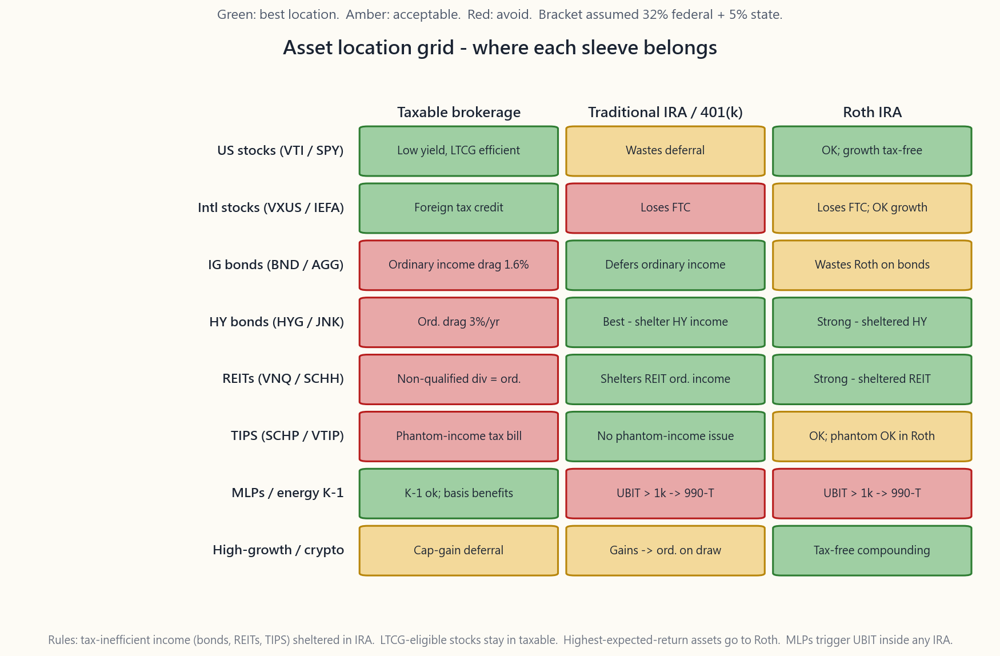
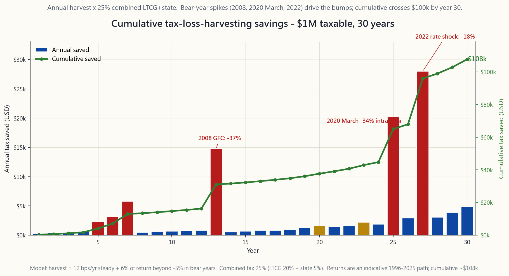

Side Lesson 04: Tax Efficiency — Asset Location, Harvesting, and the IRA/401(k) Stack
1. Why This Is Important
For a US household earning between roughly $200k and $750k a year, **taxes are almost always the largest line item on the lifetime investment-cost statement**. They beat fund fees, advisory fees, and trading costs combined — and they do so by an order of magnitude. At the 32% federal bracket plus a typical 5% state bracket, a balanced taxable portfolio gives back somewhere between 1.0% and 1.7% per year in tax drag without anybody noticing, because the brokerage statement quotes pre-tax. Compound that for thirty years against a 7% real return and the after-tax terminal wealth is 25-40% lower than the back-of-envelope spreadsheet line.
The good news is that the rules are public, the rates are written down, and most of the available efficiency is mechanical. You do not need a tax attorney for the first 80%. You need four moves, in this order:
dividends sit on a separate, lower bracket schedule than wages. Knowing where you fall on it changes which sleeve of your portfolio should live in which account.
position generates the same pre-tax interest in any account. In a brokerage it loses 32%+ of that interest to the IRS every April. In a Traditional IRA it loses zero until withdrawal. The asset is identical; the location changes the after-tax curve.
selling and re-establishing similar exposure crystallises a tax loss that offsets gains anywhere else in the portfolio. Most retail investors leave this money on the table because the wash-sale rule looks scarier than it is.
401(k), brokerage — each has a different tax treatment on the way in, while invested, and on the way out. Filling them in the wrong order can cost six figures by retirement.
This lesson is the operating manual for those four moves. The deeper rule — "the largest unspoken fee is tax; use options and margin to manage it" — sits at the very end of the stack. Once the easy structural wins are captured, the marginal dollar of tax efficiency comes from how you hold the position (LTCG holding period, Section 1256 60/40 split, options as deferred income), not from which fund you bought.

2. What You Need to Know
2.1 The 2026 Rate Schedule — The Numbers You Have to Memorise
Three separate schedules govern investment income in the US. Burn the 2026 numbers (post-TCJA-extension) into memory:
Long-term capital gains and qualified dividends — held >12 months.
| Bracket | MFJ taxable income (2026) | Single taxable income |
|---|---|---|
| 0% | up to $96,700 | up to $48,350 |
| 15% | $96,701 - $600,050 | $48,351 - $533,400 |
| 20% | above $600,050 | above $533,400 |
On top of that, the 3.8% Net Investment Income Tax (NIIT) kicks in above $250k MAGI for MFJ ($200k single). It applies to interest, dividends, capital gains, royalties, rents, and most passive income. For a typical professional couple at $300k AGI, the effective LTCG rate is therefore 15% + 3.8% = 18.8%, not 15%. Above $600k the top federal rate is 20% + 3.8% = 23.8%.
Short-term capital gains (held ≤12 months) and **non-qualified dividends** (REITs, most BDCs, many foreign stocks) — taxed as ordinary income at your marginal wage bracket: 22% / 24% / 32% / 35% / 37%. NIIT still applies on top.
Treasury interest — federal ordinary income, state-exempt. A 4.2% 10-year Treasury in California is a roughly 4.4% taxable- equivalent yield; in a 0%-state, the headline 4.2% is the headline.
Municipal bond interest — federal-exempt; in-state munis are state-exempt too. Often AMT-exempt depending on the issue.
The single most important consequence is the rate gap: in the 32% bracket, ordinary-rate income loses 37% (32% federal + 5% state) of every dollar, while qualified-dividend income loses 20% (15% LTCG + 5% state). The gap is 17 percentage points of after-tax yield on the same gross dollar. That is the lever asset location pulls.
2.2 Asset Location — The Free Lunch
The principle is one sentence: **hold tax-inefficient assets in tax-deferred accounts, and tax-efficient assets in taxable accounts.** Mechanical, not clever. A summary of the eight canonical sleeves:
dividends, capital gains realise only when you sell. Tax drag in a brokerage is roughly 0.3-0.4% per year. **Best location: Taxable.** (Roth is acceptable but wastes the rare LTCG advantage.)
plus a foreign tax credit of 7-9% of the dividends paid abroad — a credit you can only claim if the position is in a taxable account. Putting VXUS in an IRA forfeits the credit. **Best location: Taxable.**
4-5% in interest, all taxed as ordinary income at federal + state. Tax drag in a brokerage at 32% federal + 5% state is roughly 1.6% per year on a 4.5%-yielding bond fund. **Best location: Traditional IRA / 401(k).**
except the yield is 7-8% and the drag is correspondingly larger (~3.0%/yr). Best location: Traditional IRA.
dividends*. The 20% Section 199A pass-through deduction softens the blow to roughly 80% of the marginal rate, but it is still much worse than LTCG. Best location: Traditional IRA, with Roth a close second.
income each year, even when not received in cash ("phantom income"). Holding TIPS in a brokerage account guarantees a tax bill on money you have not yet seen. **Best location: Traditional IRA / I-Bonds (the I-Bond version defers automatically).**
are partly return-of-capital (great for taxable) but generate K-1s. Inside an IRA, K-1 income above $1,000 triggers UBIT — Unrelated Business Income Tax — at trust-level rates up to 37%, and the IRA itself files a separate return. **Best location: Taxable. Worst location: any IRA.**
speculation).** Returns are dominated by capital gains, which can be deferred indefinitely in a brokerage. But because the *expected compound return is highest*, every dollar of growth is most valuable when it is also tax-free. Best location: Roth. A Roth-held BTC IBIT or speculative single-stock position compounded for 30 years and pulled out at 65 is the most powerful single tax move available to a retail investor.
The image at the top of this lesson is the visual summary. Cells in green are the right location for that asset; red is wrong; amber is acceptable.
2.3 Tax-Loss Harvesting and the Wash-Sale Rule
Tax-loss harvesting (TLH) is mechanical: any position currently trading below your cost basis can be sold to crystallise a paper loss, which then offsets realised gains anywhere else in your portfolio and up to $3,000 of ordinary income per year. Unused losses carry forward indefinitely. The savings on a typical $1M taxable portfolio in a normal-volatility year is roughly $3,000-$5,000 / year, which compounds to roughly $100k of saved taxes over a 30-year horizon on the chart below.

The wash-sale rule (IRC §1091) is the only real constraint. If you sell a security at a loss, you cannot buy "substantially identical" securities in any account you control (including IRAs and your spouse's accounts) within 30 days before or after the sale, or the loss is disallowed and added to the basis of the replacement.
Three rules of thumb that pass the test in practice:
issuer, different index), VOO ↔ IVV, BND ↔ AGG. The IRS has never challenged a swap between two index ETFs tracking *different indices* even if the indices are 95%+ overlapping.
may swap back if you prefer the original. Most TLH platforms (Wealthfront, Betterment, Schwab Tax-Loss Harvesting) automate this round-trip.
This is the most expensive accidental wash-sale: most retail investors do not realise the rule reaches across accounts and even into spousal IRAs.
The harvest is "free" only at the gross level. At the net level you have lowered the cost basis of the replacement, so the saved tax is really deferred tax. The compounded benefit is real (you keep more invested, longer) but you are not literally erasing the liability — you are postponing it, ideally until a year you control the bracket (early retirement, gap year, charitable transfer, or death-with-step-up).
2.4 Roth Conversions and the Mega-Backdoor Roth
Two advanced moves that compound enormously over a career.
Roth conversion. You move money from a Traditional IRA or 401(k) into a Roth IRA. The conversion is taxable as ordinary income in the year of the move. The Roth then grows tax-free forever and is not subject to RMDs (Required Minimum Distributions, currently age 75 under SECURE 2.0). The arithmetic is favourable whenever **your current marginal bracket is lower than your expected future marginal bracket on the same dollar.**
The classic case: a 60-year-old retires with a $1.5M Traditional IRA and waits until age 75 RMDs force ~$60k/year of distributions on top of Social Security. Those forced distributions get taxed at the 22%+ bracket. Instead, the retiree converts $50k/year between ages 60 and 70 in the low-income gap years, paying 12-22% on the way in and zero on the way out. The lifetime tax bill drops by 5-10 percentage points on the converted amount.
Mega-backdoor Roth. A subset of 401(k) plans allow after-tax (non-Roth) contributions on top of the regular $23,500 employee limit, up to the combined $70,000 (2026) annual addition cap. Those after-tax dollars can be immediately rolled — in-plan or to a Roth IRA — into Roth status, putting up to **$46,500 of extra Roth money** into the system every year. The catch: only ~50% of plans support the in-plan conversion, and the rules are an HR-department question, not a tax-attorney one. If your plan supports it, this is the single highest-leverage tax move in the US system.
2.5 The HSA — The Triple-Tax Account
The Health Savings Account is the only US account that is **tax-free on the way in, tax-free on growth, and tax-free on the way out** (provided withdrawals are for qualified medical expenses). 2026 contribution limits: $4,400 single / $8,750 family. The HSA is available only if you are enrolled in a qualifying high-deductible health plan (HDHP).
The high-leverage move is to **fund the HSA, invest it in a total-stock-market fund, and pay current medical expenses out of pocket** — saving the receipts. After 30 years of compounding the HSA can be $300k+, and you can reimburse yourself for the old medical receipts at any time, tax-free. This converts what looks like a healthcare account into a stealth Roth IRA with no income limits, no contribution caps tied to wages, and no required distribution age (HSA distributions for non-medical expenses after 65 are taxed as ordinary income — same as a Traditional IRA — so the worst-case downside is "Traditional IRA").
The HSA is the first dollar in the contribution stack for any investor with access to it. Even before the 401(k) match.
2.6 The Account-Filling Order
The full priority stack for a new dollar of savings, in 2026:
not negotiable.
depending on your bracket — Roth if current bracket ≤ expected future, Traditional otherwise.
Roth income limits (single MAGI > $165k, MFJ > $246k in 2026).
exhausted, the taxable account holds the residual — which is exactly where the asset-location and TLH discipline does its work.
college-bound dependents — the limit varies by state but $10-15k per beneficiary is the typical sweet spot.
2.7 Withdrawal Order — Distribution-Side Tax Planning
The accumulation order has a mirror on the distribution side. The canonical retirement-withdrawal sequence:
age 75, inherited IRAs).
benefit from the basis you have built up (and any losses you harvested). Capital gains realisation is deliberate — you can pick high-basis lots and stay in the 0% LTCG bracket if your taxable income is under the threshold.
income; control the bracket by keeping annual draws under the next-bracket boundary.
withdrawal. Holding it last maximises tax-free compounding and leaves it for late-life expenses, charitable transfers, or inheritance (where heirs get 10 tax-free years under SECURE 2.0).
A subtle and powerful variant: in the gap years between retirement and age 75 (or earlier Social Security claiming), keep ordinary income low and use those years to convert Traditional → Roth (per §2.4) while withdrawing from the Taxable account for living expenses. This is the single most-effective lifetime tax-management move available to early retirees.
2.8 Tax via Options and Margin
Once steps 2.2-2.7 are mechanical, the marginal dollar of tax-efficiency comes from how you hold the position. There are four exposure-level moves:
- **Use Section 1256 contracts (SPX / NDX index options, /ES
- Cover instead of selling. If a stock has a $200k embedded gain,
- Replace shares with synthetic longs. A long-call + short-put
- Box spreads and portfolio-margin loans. Borrow against the
These are the moves that separate "good" from "exceptional" after-tax returns over a 30-year horizon. They are not necessary to capture 80% of the available efficiency — the §2.2-2.7 stack handles that — but they are how you close the last 20% of the gap.
3. Common Misconceptions
1. "All dividends are taxed the same way." Wrong. Qualified dividends from US C-corps held >60 days are taxed at LTCG rates. REIT distributions, BDC distributions, MLP guaranteed payments, and most foreign dividends are non-qualified and taxed as ordinary income.
2. "I can deduct my full investment loss against income." Only $3,000 per year against ordinary income ($1,500 if MFS). Larger losses offset realised gains first, then carry forward indefinitely against future gains.
3. "Bonds in Roth are smart because they're 'safe.'" Backwards. Bonds yield ordinary income, which gets the worst tax treatment. Putting them in Roth wastes the Roth's tax-free growth on the lowest-expected-return asset in your stack. Bonds should sit in a Traditional IRA, where the income is deferred to a low-bracket retirement year.
4. "TIPS and I-Bonds are the same thing." They are not. TIPS in a brokerage account generate phantom-income tax bills annually on the inflation accrual. I-Bonds defer the tax to redemption. Hold TIPS in IRAs only; I-Bonds anywhere is fine.
*5. "I need to wait 30 days after* selling to buy back the same security."* It is 30 days before and 30 days after* — a full 61-day window centred on the sale. And it includes the IRA, the spousal IRA, and any joint account.
6. "Roth is always better than Traditional." False. Roth wins when your current marginal bracket is lower than your retirement marginal bracket. Most high earners in their peak years are in 32-37% brackets; Traditional contributions deduct at that rate, and the withdrawal in retirement is often at 22-24%. Traditional wins in that case.
7. "MLPs in an IRA are fine because IRAs don't pay tax." They trigger UBIT — Unrelated Business Income Tax — at trust rates, the highest rates in the code. If your MLP K-1 reports more than $1,000 of UBTI, your IRA itself files Form 990-T and pays tax. Keep MLPs out of any tax-advantaged account.
8. "Tax-loss harvesting permanently eliminates the tax." It defers it. The replacement security has a lower basis equal to your original cost minus the harvested loss. When you eventually sell the replacement, the gain is bigger by exactly the amount you harvested. The benefit is the time value of money on the deferred tax, plus the optionality to realise in a low-bracket year (or never, via step-up at death).
9. "Roth conversions are pointless if my future bracket is lower." Yes — that is exactly the case where you should not convert. Run the bracket comparison every year. Convert in years when current < future; do nothing in years when future ≤ current.
**10. "The HSA is a healthcare account; it has nothing to do with my investments."** The HSA is the most powerful tax-advantaged investment account in the US system. The healthcare label is a historical artefact. If your HSA is in a "saving account" earning 0.05%, you are leaving the triple-tax benefit on the table.
4. Q&A
**Q1: I'm 35, in the 24% bracket, with a $400k taxable account, $150k Trad IRA, and $50k Roth IRA. Where do my new contributions go?**
A: Stack order: 401(k) match → HSA → 401(k) Trad up to limit (24% deduction is solid) → backdoor Roth IRA → mega-backdoor if available → taxable. Inside the existing balances, move bonds and any REIT positions out of the taxable account into the Trad IRA, and put broad-market index funds and international stock into the taxable. Use the Roth for any speculative high-growth exposure (small-cap, crypto ETF, growth single names).
Q2: How much TLH alpha can I realistically expect?
A: Empirically, 30-60 bps per year of after-tax alpha on a balanced stock portfolio at a 32% federal + 5% state bracket. The benefit declines as the cost basis of the portfolio rises (after a long bull run there is less left to harvest), and spikes in volatile years like 2008 and March 2020 ($15k+ on a $1M book in a single tax year). Cumulative over 30 years: roughly $100k on a $1M starting balance, depending on the path.
Q3: I'm above the Roth IRA income limit. Can I still contribute?
A: Yes, via the backdoor Roth IRA: contribute $7,000 non-deductibly to a Traditional IRA, then immediately convert it to Roth. The conversion is tax-free if you have no other pre-tax Traditional IRA balance (the pro-rata rule is the only trap — it does not apply if your only Traditional IRA balance is the one you just funded). For 401(k)s above the $23,500 employee limit, the mega-backdoor Roth is the analogous move.
Q4: When does Roth-conversion math work?
A: Run the comparison once a year. If your current marginal bracket on the converted dollar is lower than your *expected retirement* marginal bracket on the same dollar (after counting Social Security, pensions, and RMDs), convert. If higher, don't. The most reliable conversion years are early-retirement gap years (60-70) where ordinary income is low and you can fill the 12%/22% brackets cheaply.
**Q5: Are municipal bonds always better than Treasuries in a taxable account?**
A: Compare the tax-equivalent yield: muni yield ÷ (1 - federal bracket - state bracket if in-state). At 32% federal + 5% state, a 3.5% in-state muni has a TEY of 3.5% / (1 - 0.37) = 5.55%. A 4.2% Treasury has a TEY of 4.2% / (1 - 0.32) = 6.18% (state exemption already applied). Treasuries win in this case. The crossover is usually at the 35-37% federal bracket.
Q6: Can I tax-loss harvest in my IRA?
A: No — there are no taxes inside the IRA, so there are no losses to harvest. Worse, an IRA purchase of the substantially-identical security can trigger a wash sale on the loss you took in the taxable account, disallowing the deduction permanently (the basis adjustment cannot be applied to an IRA position).
Q7: What about state income tax — does it change asset location?
A: Yes, materially. Treasuries are state-exempt, so in a high-tax state (CA 13.3%, NY 10.9%, HI 11%) the case for holding Treasuries in taxable gets stronger because you save state tax that an IRA doesn't otherwise charge. Munis become more attractive than Treasuries above the 35% federal bracket in 0%-state states, and above 32% in high-state states.
Q8: What is "phantom income" on TIPS and why does it matter?
A: TIPS' principal adjusts for CPI inflation each month. The IRS treats that adjustment as taxable ordinary income in the year it accrues, even though you receive the cash only at maturity. In a brokerage you owe tax annually on imputed income; in an IRA the adjustment is irrelevant because nothing inside the IRA is taxed until withdrawal. TIPS belong in an IRA.
**Q9: I have a $200k embedded gain in AAPL. Tax cost to sell is $40k+. How do I reduce exposure without selling?**
A: Three options. Covered call — sell a 30-delta 60-DTE call, collect 1-2% premium, keep the gain unrealised, give up some upside (Week 27). Collar — buy a 25-delta put + sell a 25-delta call, paid for by the call premium, locks in a band without realising gain (Week 30). Synthetic-short overlay — short an equivalent index future against the position to hedge market beta only; idiosyncratic AAPL exposure remains. Each removes exposure without crystallising tax. Tax via options.
Q10: Should I prioritise Roth or HSA contributions?
A: HSA first — it is triple-tax (deductible going in, tax-free growth, tax-free withdrawals for medical), better than either Roth or Traditional. Then 401(k) up to the match. Then Roth or Roth 401(k) depending on bracket math. The HSA's only catch is that non-medical withdrawals before 65 incur a 20% penalty plus ordinary tax — after 65 the penalty is waived, leaving worst-case "Traditional IRA" treatment.
Q11: How does the 3.8% NIIT work in practice?
A: It applies to the lesser of (a) net investment income, or (b) MAGI above the threshold ($250k MFJ / $200k single). At $300k MAGI with $40k of investment income, you owe 3.8% × min($40k, $50k) = $1,520. The fix is the same as for any tax: either reduce investment income (asset location), reduce MAGI (Traditional 401(k) contributions), or do both. The practical effect is to push the real LTCG rate to 18.8% / 23.8% for affected households.
Q12: What does the Tax Optimizer in this lesson actually do?
A: It takes your federal bracket, state rate, taxable / Trad / Roth balances, and current age. It computes (1) the optimal asset-class location for each of eight standard sleeves; (2) projected after-tax wealth at age 65 under reasonable growth assumptions for each account type; (3) a suggested annual TLH harvest target based on your taxable balance and assumed equity volatility; and (4) a suggested annual Roth-conversion amount sized to fill your current marginal bracket without crossing the next break. It is not tax advice — it is a back-of-envelope sanity check on the moves described in this lesson.
附加課程 04：稅務效率——資產配置位置、稅務虧損收割及 IRA/401(k) 帳戶堆疊策略
1. 為何此課題至關重要
對於年收入介乎約 20 萬至 75 萬美元的美國家庭而言，稅務幾乎永遠是終身投資成本清單上最大的一項支出。稅務支出遠超基金開支比率、顧問費及交易成本的總和——而且差距達一個數量級。在 32% 聯邦稅率加上約 5% 州稅率的情況下，一個配置均衡的應稅投資組合每年會因稅務拖累而損失約 1.0% 至 1.7% 的回報，而投資者卻渾然不知，因為券商結單所顯示的是稅前數字。以 7% 的實際回報率複利計算三十年，稅後最終財富將比試算表上的估算數字低 25% 至 40%。
好消息是，所有規則均屬公開，稅率均有明文規定，大部分可用的效率提升方法都是機械性操作。要達到頭 80% 的效率，無需聘用稅務律師。你只需要按以下順序執行四個步驟：
本課程是上述四個步驟的操作手冊。更深層的原則——「最大的隱性費用是稅務；利用期權及槓桿加以管理」——位於整個策略堆疊的最末端。一旦掌握了容易實現的結構性收益，每一分邊際稅務效率便要從持有方式入手（長期資本增值持有期、Section 1256 六四分賬處理、以期權代替普通收入），而非從購買哪隻基金著手。
2. 必須掌握的核心知識
2.1 2026 年稅率表——必須熟記的數字
在美國，投資收入受三套獨立稅率表規管。請牢記 2026 年（《減稅與就業法案》延期後）的數字：
長期資本增值及合資格股息——持有期超過 12 個月。
| 稅率 | 夫妻聯合申報應稅收入（2026年） | 單身申報應稅收入 |
|---|---|---|
| 0% | 不超過 $96,700 | 不超過 $48,350 |
| 15% | $96,701 至 $600,050 | $48,351 至 $533,400 |
| 20% | 超過 $600,050 | 超過 $533,400 |
此外，3.8% 淨投資收入稅（NIIT）在夫妻聯合申報 MAGI 超過 25 萬美元（單身 20 萬美元）時生效。適用範圍涵蓋利息、股息、資本增值、特許權使用費、租金及大多數被動收入。對於 AGI 為 30 萬美元的典型雙職業夫妻而言，實際長期資本增值稅率因此為 15% + 3.8% = 18.8%，而非 15%。超過 60 萬美元時，聯邦最高稅率為 20% + 3.8% = 23.8%。
短期資本增值（持有期不超過 12 個月）及非合資格股息（房地產信託基金、大多數 BDC、許多外國股票）——按普通收入的邊際工資稅率徵稅：22%、24%、32%、35%、37%。NIIT 仍另行疊加。
國債利息——聯邦普通收入，州稅豁免。一張 4.2% 的 10 年期國債在加州的應稅等值收益率約為 4.4%；在免州稅的州份，4.2% 的表面收益率即為實際收益率。
市政債券利息——聯邦稅豁免；本州發行的市政債券同時享有州稅豁免。視乎債券發行情況，通常亦可豁免 AMT。
最重要的結論是稅率差距：在 32% 聯邦稅率加 5% 州稅的情況下，普通收入每賺一美元只剩 63 美分，而合資格股息每賺一美元則保留 80 美分。差距達同一元總收入 17 個百分點的稅後收益率。這正是資產配置位置所能發揮的槓桿效用。
2.2 資產配置位置——免費的午餐
原則只需一句話：將稅務效率低的資產存放於稅務遞延帳戶，將稅務效率高的資產存放於應稅帳戶。 純屬機械操作，無需技巧。以下是八類標準資產的配置摘要：
本課程開頭的圖片是視覺摘要。綠色格子代表該資產的正確存放位置；紅色代表錯誤；琥珀色代表可接受。
2.3 稅務虧損收割與 Wash-Sale 規則
稅務虧損收割（TLH）是機械性操作：任何目前交易價格低於成本基礎的持倉，均可賣出以實現帳面虧損，繼而抵銷投資組合其他部分的任何已實現盈利，以及每年最多 3,000 美元的普通收入。未使用的虧損可無限期結轉至未來年度。一個典型的 100 萬美元應稅投資組合在正常波動性的年份，每年大約可節省 3,000 至 5,000 美元的稅款，如下方圖表所示，30 年後累計可相當於節省約 10 萬美元的稅款。
Wash-Sale 規則（IRC §1091） 是唯一真正的限制條件。如果你以虧損賣出某證券，則不得在賣出日前後 30 天內於任何你控制的帳戶（包括 IRA 及配偶帳戶）購買「實質上相同」的證券，否則虧損將被取消確認，並計入替代證券的成本基礎。
在實踐中，以下三條經驗法則可通過審查：
稅務虧損收割在總量層面是「免費」的，但在淨量層面，你已降低了替代資產的成本基礎，因此節省的稅款實質上是遞延的稅款。複利效益是真實的（你保留更多資金投資，時間更長），但你並非真正消除了稅務負債——你是在推遲它，理想情況是推遲至你能控制稅率的年份（提前退休、收入空窗期、慈善轉讓，或死亡後享有成本基礎重設）。
2.4 Roth IRA 轉換與大額後門 Roth
兩個在整個職業生涯中能帶來巨大複利效益的進階策略。
Roth IRA 轉換。 你將資金從傳統 IRA 或 401(k) 轉移至 Roth IRA。轉換金額在轉換當年以普通收入計稅。此後 Roth IRA 永遠免稅增長，且不受強制最低提款額（RMD，按 SECURE 2.0 目前為 75 歲起生效）約束。每當你的當前邊際稅率低於同一美元的預期未來邊際稅率時，此計算在數學上均屬有利。
典型案例：一位 60 歲的退休人士持有 150 萬美元的傳統 IRA，等到 75 歲的 RMD 迫使他每年在社會保障金之上額外提取約 6 萬美元，這些強制提款將按 22% 以上的稅率徵稅。相反，若退休人士在 60 至 70 歲之間的低收入空窗期，每年轉換 5 萬美元，按 12% 至 22% 的稅率繳稅，提取時則免稅。終身稅務負擔在轉換金額上可降低 5 至 10 個百分點。
大額後門 Roth。 約有一半的 401(k) 計劃允許在正常員工限額 23,500 美元之上，額外存入稅後（非 Roth）資金，最高達 7 萬美元（2026 年）的年度合計上限。這些稅後資金可立即轉換——在計劃內或轉至 Roth IRA——以取得 Roth 身份，每年可額外存入最多 46,500 美元的 Roth 資金。注意事項：僅約 50% 的計劃支持計劃內轉換，相關規則屬人力資源部門範疇，而非稅務律師的問題。若你的計劃支持此操作，這是整個美國稅務體系中槓桿效用最高的稅務策略。
2.5 HSA——三重稅務優惠帳戶
健康儲蓄帳戶（HSA）是美國唯一一個存入時免稅、增長時免稅、提取時亦免稅的帳戶（前提是提款用於合資格醫療費用）。2026 年的供款上限：單身 4,400 美元 / 家庭 8,750 美元。HSA 僅適用於已參加符合資格的高自付額醫療保險計劃（HDHP）的人士。
高槓桿做法是：供滿 HSA，將其投資於全市場股票指數基金，並自掏腰包支付當前醫療費用——同時保存收據。經過 30 年的複利增長，HSA 可積累至 30 萬美元以上，屆時你可以憑借舊收據隨時免稅報銷。這將一個看似醫療保健帳戶的工具，轉化為沒有收入限制、沒有與工資掛鉤的供款上限、也沒有強制提款年齡的隱形 Roth IRA（65 歲後用於非醫療用途的 HSA 提款，將按普通收入徵稅——與傳統 IRA 相同——因此最壞的情況下等同於「傳統 IRA」）。
對於任何有資格使用 HSA 的投資者，HSA 是供款堆疊中的第一優先。甚至優先於 401(k) 僱主匹配供款。
2.6 帳戶填滿順序
2026 年每一新增儲蓄的完整優先順序堆疊：
2.7 提款順序——提取側稅務規劃
累積順序在提取側有對應的鏡像。標準退休提款順序如下：
一個微妙而強大的變體：在退休與 75 歲（或更早領取社會保障金）之間的空窗期，將普通收入維持在低水平，利用這些年份將傳統 IRA 轉換至 Roth IRA（參見第 2.4 節），同時提取應稅帳戶資金作為生活費。這是提前退休人士可用的最有效的終身稅務管理策略。
2.8 透過期權及槓桿管理稅務
一旦第 2.2 至 2.7 節的步驟已成為機械化操作，邊際稅務效率的提升便來自於持有倉位的方式。以下是四個倉位層面的策略：
- 使用 Section 1256 合約（SPX / NDX 指數期權、/ES 期貨、/MES、/MNQ）。 無論持有期長短，這些合約均按 60% 長期資本增值 / 40% 短期資本增值計稅——混合最高稅率約為 26.8%，相較於短期股票期權的 37%，整體可降低約 10 個百分點的稅率。對於活躍的期權沽出者而言，這是一項全面性的折扣。
- 以對沖取代賣出。 若某股票有 20 萬美元的嵌入式盈利，不要賣出以降低敞口——而是疊加一個認購期權沽出（備兌認購期權）或價格區間保護（認沽期權買入 + 認購期權沽出）。你收取期權金或成本極低，Delta 降低，而嵌入式盈利仍維持未實現狀態。
- 以合成多倉取代持股。 相同行使價的認購期權買入 + 認沽期權沽出，可複製 100 股股份，但只需約十分之一的資金。在水下持倉的情況下，賣出正股同時持有合成倉位，可實現稅務虧損（需就合成倉位的 wash-sale 考量諮詢稅務專業人士以確認結構合規），並釋放資金用於其他用途。
- 箱式價差及投資組合保證金貸款。 以投資組合作抵押，按低於國債的利率借款，使用現金，永不賣出。倉位持續免稅複利增長，直至最終賣出或在死亡時享有成本基礎重設。
3. 常見誤解
1. 「所有股息的稅務處理方式相同。」 錯誤。持有超過 60 天的美國 C 類企業股份所派發的合資格股息，按長期資本增值稅率徵稅。房地產信託基金分派、BDC 分派、MLP 保證付款及大多數外國股息屬非合資格股息，按普通收入稅率徵稅。
2. 「我可以將全部投資虧損用於抵扣收入。」 每年只能抵扣最多 3,000 美元的普通收入（夫妻分開申報為 1,500 美元）。較大金額的虧損首先抵銷已實現盈利，餘額可無限期結轉，用於抵扣未來盈利。
3. 「在 Roth IRA 存入債券很聰明，因為債券是『安全』的。」 本末倒置。債券帶來普通收入，而普通收入的稅務處理方式最不利。將債券存入 Roth IRA，是將免稅增長的優勢浪費在投資組合中預期回報最低的資產上。債券應存放於傳統 IRA，讓收入遞延至低稅率的退休年份。
4. 「通脹掛鉤國債和 I 系列儲蓄債券是一樣的。」 並非如此。存放於普通證券帳戶的通脹掛鉤國債，每年均會因通脹累計金額而產生幻像收入稅務負擔。I 系列儲蓄債券將稅務遞延至贖回時。通脹掛鉤國債應只存放於 IRA；I 系列儲蓄債券則在任何帳戶均可。
5. 「賣出後需等 30 天才能買回相同證券。」 是賣出日前後各 30 天——以賣出日為中心，共 61 天的窗口。而且涵蓋 IRA、配偶 IRA 及任何聯名帳戶。
6. 「Roth IRA 永遠比傳統 IRA 好。」 錯誤。當你的當前邊際稅率低於你的退休時邊際稅率時，Roth IRA 才勝出。大多數高收入人士在收入高峰期處於 32% 至 37% 的稅率區間；傳統 IRA 的供款以此稅率扣減，而退休後的提款通常只需繳 22% 至 24%。在這種情況下，傳統 IRA 反而更勝一籌。
7. 「MLP 存入 IRA 沒問題，因為 IRA 不需繳稅。」 MLP 會觸發 UBIT——非相關業務收入稅——按稅法中最高的信託稅率徵稅。若你的 MLP K-1 表格申報的 UBTI 超過 1,000 美元，你的 IRA 本身需提交 990-T 表格並繳稅。請將 MLP 置於任何稅務優惠帳戶之外。
8. 「稅務虧損收割可永久消除稅務負擔。」 只是遞延。替代證券的成本基礎，等於你原來的成本減去已收割的虧損。當你最終賣出替代證券時，盈利會因此增加，增加金額恰好等於你已收割的金額。其好處在於遞延稅款的貨幣時間價值，加上選擇在低稅率年份（或永不賣出，透過死亡後的成本基礎重設）實現盈利的選擇權。
9. 「若未來稅率更低，Roth IRA 轉換毫無意義。」 正確——這正是你不應進行轉換的情況。每年進行一次稅率比較。當前稅率低於未來稅率時轉換；未來稅率不高於當前稅率時按兵不動。
10. 「HSA 是醫療保健帳戶，與我的投資無關。」 HSA 是美國稅務體系中最強大的稅務優惠投資帳戶。「醫療保健」的標籤只是歷史遺留。若你的 HSA 資金存放於收益率 0.05% 的儲蓄帳戶，你正在白白放棄三重稅務優惠。
4. 問答環節
問題 1：我 35 歲，處於 24% 的稅率級別，持有 40 萬美元的應稅帳戶、15 萬美元的傳統 IRA 及 5 萬美元的 Roth IRA。新增供款應如何分配？
答：按堆疊順序：401(k) 供至僱主匹配上限 → HSA 供至上限 → 401(k) 傳統型供至限額（24% 的稅務扣減相當可觀）→ 後門 Roth IRA → 若計劃支持則選用大額後門 Roth → 應稅帳戶。就現有帳戶餘額而言，將債券及任何房地產信託基金倉位從應稅帳戶移至傳統 IRA，並將廣泛市場指數基金及國際股票基金留在應稅帳戶。Roth IRA 則用於存放任何投機性高增長敞口（細價股、加密貨幣交易所買賣基金、增長個股）。
問題 2：稅務虧損收割實際上能帶來多少超額回報？
答：根據實證數據，在 32% 聯邦稅率加 5% 州稅的情況下，一個均衡股票投資組合每年稅後超額回報約為 30 至 60 個基點。隨著投資組合的成本基礎上升（長期牛市後可供收割的空間減少），此效益會下降；而在 2008 年及 2020 年 3 月等波動性較大的年份，單一稅務年度可在 100 萬美元的帳簿上收割 1.5 萬美元以上。30 年累計：以 100 萬美元的起始餘額計算，視市場路徑而定，約可節省 10 萬美元的稅款。
問題 3：我的收入超過 Roth IRA 的直接供款限額，是否仍可供款？
答：可以，透過後門 Roth IRA：以 7,000 美元作為非可扣減供款存入傳統 IRA，然後立即轉換至 Roth IRA。若你沒有其他稅前傳統 IRA 餘額，轉換時無需繳稅（按比例規則是唯一的陷阱——若你的傳統 IRA 餘額僅為剛存入的金額，則不適用此規則）。對於超出 23,500 美元員工限額的 401(k)，大額後門 Roth 是對應的策略。
問題 4：什麼時候 Roth IRA 轉換在數學上合算？
答：每年進行一次比較。若轉換金額的當前邊際稅率低於同一美元的預期退休邊際稅率（計入社會保障金、退休金及強制最低提款額後），則進行轉換。若更高，則不轉換。最可靠的轉換年份是 60 至 70 歲的提前退休空窗期，此時普通收入較低，可以較低成本填滿 12% 或 22% 的稅率級別。
問題 5：在應稅帳戶中，市政債券是否永遠優於國債？
答：比較應稅等值收益率：市政債券收益率 ÷（1 - 聯邦稅率 - 州稅率，若為本州發行）。在 32% 聯邦稅率加 5% 州稅的情況下，一隻 3.5% 的本州市政債券的應稅等值收益率為 3.5% ÷（1 - 0.37）= 5.55%。一隻 4.2% 的國債（州稅豁免已計入）的應稅等值收益率為 4.2% ÷（1 - 0.32）= 6.18%。此情況下，國債勝出。通常在 35% 至 37% 的聯邦稅率級別才出現轉捩點。
問題 6：我可以在 IRA 帳戶內進行稅務虧損收割嗎？
答：不可以——IRA 內部無需繳稅，因此沒有可供收割的虧損。更糟的是，在 IRA 內購入實質上相同的證券，可能觸發 wash-sale 規則，令你在應稅帳戶中已實現的虧損被永久取消確認（成本基礎調整無法應用於 IRA 持倉）。
問題 7：州所得稅是否影響資產配置位置決策？
答：影響顯著。國債享有州稅豁免，因此在高稅率州（加州 13.3%、紐約州 10.9%、夏威夷 11%），在應稅帳戶持有國債的理由更充分，因為你可節省 IRA 不會另行徵收的州稅。在聯邦稅率超過 35% 時，市政債券在免州稅的州份比國債更具吸引力；在高州稅州份，聯邦稅率超過 32% 時即如此。
問題 8：通脹掛鉤國債的「幻像收入」是什麼，為何重要？
答：通脹掛鉤國債的本金每月按 CPI 通脹調整。美國國稅局將這一調整視為當年應課稅的普通收入，即使你要到到期時才以現金收取。在普通證券帳戶中，你每年都要就應計收入繳稅；在 IRA 中，這一調整毫不相干，因為 IRA 內的一切直至提款前均不課稅。通脹掛鉤國債應存放於 IRA。
問題 9：我持有 AAPL 的嵌入式盈利達 20 萬美元，出售的稅務成本逾 4 萬美元。如何在不賣出的情況下降低敞口？
答：三個選項。備兌認購期權——沽出 Delta 30 的 60 天到期日認購期權，收取 1% 至 2% 的期權金，嵌入式盈利保持未實現，放棄部分上行空間（第 27 週）。價格區間保護——買入 Delta 25 的認沽期權 + 沽出 Delta 25 的認購期權，由認購期權期權金支付成本，在不實現盈利的情況下鎖定價格區間（第 30 週）。合成空倉疊加——沽出等值的指數期貨以對沖市場 Beta，對沖只針對市場敞口，個別的 AAPL 敞口仍然保留。三種方法均可在不觸發稅務的情況下降低敞口。這就是透過期權管理稅務。
問題 10：我應優先選擇 Roth IRA 還是 HSA 供款？
答：HSA 優先——三重稅務優惠（存入時可扣減、免稅增長、醫療用途提款免稅），優於 Roth IRA 或傳統 IRA。然後是 401(k) 供至僱主匹配上限。再後是 Roth 型或 Roth 401(k)，視稅率計算而定。HSA 唯一的注意事項是：65 歲前用於非醫療用途的提款，須繳 20% 罰款加普通收入稅——65 歲後罰款豁免，最壞情況等同「傳統 IRA」待遇。
問題 11：3.8% 淨投資收入稅在實際操作中如何運作？
答：適用於以下較小值：（a）淨投資收入，或（b）MAGI 超出門檻的金額（夫妻聯合申報 25 萬美元 / 單身 20 萬美元）。若 MAGI 為 30 萬美元，投資收入為 4 萬美元，則須繳納 3.8% × min（4 萬美元，5 萬美元）= 1,520 美元。對策與任何稅務規劃相同：減少投資收入（資產配置位置策略）、降低 MAGI（傳統 401(k) 供款），或兩者並行。實際效果是，受影響家庭的實際長期資本增值稅率提升至 18.8% / 23.8%。
問題 12：本課程的稅務優化工具實際上有何功能？
答：輸入你的聯邦稅率級別、州稅率、應稅帳戶 / 傳統 IRA / Roth IRA 的餘額及當前年齡，工具將即時計算：（1）八種標準資產類別的最優帳戶存放位置；（2）在合理增長假設下，各類帳戶中資金至 65 歲時的稅後預計財富；（3）根據你的應稅帳戶餘額及假設股票波動性建議的年度稅務虧損收割目標；以及（4）建議每年轉換至 Roth IRA 的金額，以填滿當前邊際稅率級別而不跨越下一個稅率界線。此工具並非稅務建議——而是對本課程所述策略的一次粗略估算核查。
補充課程 04：稅務效率——資產配置、稅損收割與 IRA/401(k) 組合策略
1. 為何這很重要
對於年收入介於約 20 萬至 75 萬美元的美國家庭而言，稅務幾乎始終是終身投資成本明細表中最大的一筆支出。其金額遠超基金費用率、顧問費與交易成本的總和——差距甚至達到一個數量級。在 32% 聯邦稅率加上典型的 5% 州稅率下，一個均衡配置的應稅投資組合每年將悄悄損失 1.0% 至 1.7% 的稅務拖累，因為券商對帳單所呈現的是稅前數字，投資人往往渾然不覺。以 7% 實質報酬複利計算三十年，稅後的最終財富將比試算表上的粗估數字低 25% 至 40%。
好消息是，稅法規則都是公開的，稅率白紙黑字寫得清清楚楚，大多數可獲取的效率純屬機械操作。前 80% 的效率根本不需要稅務律師，只需四個步驟，依序執行：
本課程是上述四個步驟的操作手冊。更深層的原則——「最大的隱性費用是稅務；善用選擇權與保證金來管理它」——位於整個策略的最末端。待基本結構性紅利全數獲取後，邊際稅務效率便來自於如何持有部位（長期資本利得持有期間、第 1256 條合約的 60/40 稅率拆分、以選擇權作為遞延收入），而非買了哪支基金。
2. 必備知識
2.1 2026 年稅率級距——必須熟記的數字
美國對投資收益課徵三套獨立的稅率。請將 2026 年的數字（《減稅與就業法案》延長後版本）牢記於心：
長期資本利得與合格股利——持有超過 12 個月。
| 級距 | 已婚合併申報（MFJ）應稅所得（2026） | 單身應稅所得 |
|---|---|---|
| 0% | 最高 $96,700 | 最高 $48,350 |
| 15% | $96,701 至 $600,050 | $48,351 至 $533,400 |
| 20% | 超過 $600,050 | 超過 $533,400 |
此外，3.8% 淨投資收益稅（NIIT） 將在 MFJ 調整後總收入（MAGI）超過 25 萬美元（單身 20 萬美元）時觸發。適用範圍涵蓋利息、股利、資本利得、版稅、租金及大多數被動收入。對於調整後總收入約 30 萬美元的典型雙薪專業人士而言，實際長期資本利得稅率因此為 15% + 3.8% = 18.8%，而非 15%。超過 60 萬美元時，聯邦最高稅率為 20% + 3.8% = 23.8%。
短期資本利得（持有 12 個月以內）及非合格股利（不動產投資信託、大多數商業發展公司（BDC）、許多外國股票）——按普通所得的邊際薪資稅率課稅：22% / 24% / 32% / 35% / 37%。NIIT 仍須另外加計。
國庫券利息——聯邦普通所得，免州稅。在加州，一張 4.2% 的 10 年期國庫券的應稅等值殖利率約為 4.4%；在免州稅的州，標示的 4.2% 就是實際殖利率。
市政債券利息——免聯邦稅；本州市政債券亦免州稅。視發行條件而定，通常也免替代最低稅（AMT）。
最重要的結論在於稅率差距：在 32% 聯邦稅率加 5% 州稅的情況下，每一美元的普通所得損失 37%，而每一美元的合格股利所得僅損失 20%（15% 長期資本利得 + 5% 州稅）。差距為同一美元毛收益上 17 個百分點的稅後殖利率。這正是資產配置策略所能撬動的槓桿。
2.2 資產配置——免費的午餐
原則只需一句話：將稅務效率低的資產放在遞延稅款帳戶，將稅務效率高的資產放在應稅帳戶。 這是機械操作，不需要多聰明。以下是八大標準資產類別的摘要：
本課程開頭的圖表即為視覺摘要。綠色格子代表該資產的正確位置；紅色為錯誤；琥珀色為可接受。
2.3 稅損收割與洗售規則
稅損收割（TLH）是機械操作：任何當前交易價格低於成本基礎的部位，均可出售以實現帳面損失，用來抵銷投資組合其他部分的任何已實現利得，以及每年最多 3,000 美元的普通所得。未用完的損失可無限期向後結轉。在正常波動率的年份，一個典型的 100 萬美元應稅投資組合每年可節省約 3,000 至 5,000 美元，複利計算後，在 30 年期間約可節省 10 萬美元稅款，如下方圖表所示。
洗售規則（IRC §1091） 是唯一真正的限制。若以虧損出售一項證券，你在出售日前後 30 天內，不得在你控制的任何帳戶（包括 IRA 及配偶帳戶）買入「實質上相同」的證券，否則損失將被不予認列，並加計至替代標的的成本基礎。
以下三條經驗法則在實務上通過檢驗：
收割在毛額層面是「免費的」。在淨額層面，你降低了替代標的的成本基礎，等於原始成本減去已收割損失。因此節省的稅實際上是遞延的稅。複利效益確實存在（你讓更多資金持續投資更長時間），但你並非真正消除了稅務負擔——你是在延後它，理想情況下，延後到你能掌控稅率級距的那一年（提早退休、空窗年、慈善轉讓，或身後以墊高成本基礎的方式處理）。
2.4 Roth 轉換與超額後門 Roth
兩項在職業生涯中複利效果極為顯著的進階操作。
Roth 轉換。 你將資金從傳統型 IRA 或 401(k) 移至 Roth IRA。轉換金額在移轉當年按普通所得課稅。此後，Roth 中的資金永久免稅成長，且無需進行最低提領要求（RMD，根據 SECURE 2.0，目前從 75 歲起強制執行）。只要你的當前邊際稅率低於同一美元預期未來邊際稅率，此操作在數學上即是有利的。
典型案例：一位 60 歲退休人士持有 150 萬美元傳統型 IRA，若等到 75 歲時 RMD 強制每年提領約 6 萬美元，疊加社會安全福利金後，這些被迫提領將以 22% 以上的稅率課稅。相對地，若在 60 至 70 歲的低收入空窗期，每年轉換 5 萬美元，以 12% 至 22% 的稅率繳稅，提領時完全免稅。轉換金額的終身稅單可因此下降 5 至 10 個百分點。
超額後門 Roth。 部分 401(k) 計畫允許在一般 23,500 美元員工上限之外，再進行稅後（非 Roth）供款，直到每年合計最高 7 萬美元（2026 年）的年度添加上限。這些稅後資金可立即轉出——透過計畫內轉換或滾入 Roth IRA——進入 Roth 狀態，每年最多將額外 4.65 萬美元放入 Roth 體系。但有一個前提：約僅 50% 的計畫支援計畫內轉換，此規則是人力資源部門的問題，而非稅務律師的問題。若你的計畫支援此操作，這是整個美國稅制中單一槓桿最高的稅務操作。
2.5 健康儲蓄帳戶——三重免稅帳戶
健康儲蓄帳戶（HSA）是美國境內唯一一個存入時免稅、成長時免稅、提領時免稅的帳戶（前提是提領用於合格醫療費用）。2026 年供款上限：單身 4,400 美元 / 家庭 8,750 美元。HSA 僅適用於參加符合資格之高自付額健康計畫（HDHP）者。
高槓桿操作是：為 HSA 供款，投入全市場股票指數基金，並以自有資金支付當前醫療費用——同時保留收據。在 30 年複利成長後，HSA 可累積至 30 萬美元以上，你可隨時以舊醫療收據進行報銷，完全免稅。這將一個看似醫療帳戶的工具，轉變成隱形的 Roth IRA，且無收入限制、無與薪資掛鉤的供款上限，也無強制提領年齡（HSA 在 65 歲後的非醫療提領將按普通所得課稅——與傳統型 IRA 相同——因此最差情況下也與「傳統型 IRA」無異」）。
HSA 是供款順序中第一個應填滿的帳戶，適用於任何有資格使用的投資人，甚至優先於 401(k) 雇主配比。
2.6 帳戶填充順序
2026 年新增一美元儲蓄的完整優先順序：
2.7 提領順序——分配端稅務規劃
累積端的順序，在分配端有其對應的鏡像。典型的退休提領順序：
一個微妙且有力的變體：在退休至 75 歲（或更早開始領取社會安全福利）的空窗期，維持低普通所得，利用這些年份將傳統型轉換為 Roth（見 §2.4），同時從應稅帳戶提領生活費。這是提早退休者可採取的終身最有效單一稅務管理操作。
2.8 透過選擇權與保證金節稅
一旦 §2.2 至 §2.7 的步驟成為例行操作，邊際稅務效率便來自於如何持有部位。以下四項曝險層面的操作：
- 使用第 1256 條合約（SPX / NDX 指數選擇權、/ES 期貨、/MES、/MNQ）。 無論持有期間長短，一律按 60% 長期資本利得 / 40% 短期資本利得課稅——最高混合稅率約 26.8%，相較於短期股票選擇權的 37% 更為優惠。對於活躍的選擇權賣方而言，這是一個全面降低 10 個百分點的折扣。
- 以覆蓋代替出售。 若某股票有 20 萬美元的內嵌利得，不要出售來降低曝險——覆蓋一個空頭買權（掩護性買權）或保護性領口策略（多頭賣權 + 空頭買權）。你可收取或少付權利金，部位的 Delta 下降，而內嵌利得維持未實現狀態。
- 以合成多頭取代持股。 相同履約價的多頭買權加空頭賣權，可複製 100 股的曝險，但使用的資金僅約十分之一。出售標的股票同時持有合成部位，若處於虧損狀態，可實現稅務損失（需注意合成部位的洗售考量——請稅務專業人士確認架構），並釋放資金用於其他用途。
- 盒式價差與投資組合保證金貸款。 以投資組合為擔保，以低於國庫券的利率借款，使用現金，永遠不出售。部位持續免稅複利成長，直到你最終出售或於身後以墊高成本基礎的方式處置。
3. 常見迷思
1. 「所有股利的課稅方式都一樣。」 錯。持有超過 60 天的美國 C 類公司合格股利，按長期資本利得稅率課稅。不動產投資信託分配、商業發展公司分配、主有限合夥保證支付，以及大多數外國股利，均為非合格股利，按普通所得課稅。
2. 「我可以將全部投資損失扣抵所得。」 每年僅能扣抵 3,000 美元的普通所得（已婚分開申報為 1,500 美元）。更大的損失首先抵銷已實現利得，剩餘部分可無限期向後結轉，抵銷未來的利得。
3. 「債券放 Roth 很聰明，因為它們『安全』。」 完全相反。債券產生普通所得，適用最差的稅務處理方式。將債券放入 Roth，等於將 Roth 的免稅成長浪費在整個投資組合中預期報酬最低的資產上。債券應置於傳統型 IRA，讓利息遞延至低稅率級距的退休年份。
4. 「抗通膨公債（TIPS）和通膨連結儲蓄債券（I-Bond）是一樣的。」 它們不同。在應稅券商帳戶持有 TIPS，每年須就通膨累積調整繳納幽靈收入稅。I-Bond 則將稅款遞延至贖回時。TIPS 只能放在 IRA 中；I-Bond 在任何帳戶中持有皆可。
5. 「我需要在出售後等 30 天才能買回相同證券。」 洗售窗口是出售日前 30 天與後 30 天——以出售日為中心的完整 61 天窗口。而且涵蓋 IRA、配偶 IRA，以及任何聯名帳戶。
6. 「Roth 總是優於傳統型。」 錯。Roth 在你當前邊際稅率低於退休邊際稅率時勝出。大多數高收入者在收入高峰期適用 32% 至 37% 的稅率；傳統型供款在此稅率下進行扣除，而退休時的提領通常適用 22% 至 24%。在這種情況下，傳統型勝出。
7. 「主有限合夥放在 IRA 裡沒問題，因為 IRA 不繳稅。」 它們會觸發無關業務所得稅（UBIT）——按信託稅率課稅，為稅法中最高的稅率。若你的主有限合夥 K-1 申報超過 1,000 美元的無關業務應稅所得（UBTI），你的 IRA 本身須申報 990-T 表格並繳稅。將主有限合夥遠離所有稅務優惠帳戶。
8. 「稅損收割可以永久消除稅款。」 它是遞延稅款。替代標的的成本基礎較低，等於原始成本減去已收割損失。當你最終出售替代標的時，利得因你所收割的金額而增加。其效益在於遞延稅款的貨幣時間價值，加上選擇在低稅率級距年份實現的選擇權（或永遠不實現，透過身後墊高成本基礎處置）。
9. 「若未來稅率更低，Roth 轉換毫無意義。」 是的——這正是你不應進行轉換的情況。每年執行一次稅率比較。當前稅率低於未來稅率時，進行轉換；未來稅率低於或等於當前稅率時，按兵不動。
10. 「健康儲蓄帳戶是醫療帳戶，與我的投資無關。」 健康儲蓄帳戶是美國系統中最強大的稅務優惠投資帳戶。「健康」這個標籤只是歷史遺跡。若你的健康儲蓄帳戶放在只賺 0.05% 利息的「儲蓄帳戶」中，你正在白白浪費三重免稅的效益。
4. 問答
Q1：我今年 35 歲，適用 24% 稅率，有 40 萬美元應稅帳戶、15 萬美元傳統型 IRA，以及 5 萬美元 Roth IRA。新的供款應放哪裡？
A：依填充順序：401(k) 至雇主配比 → HSA → 401(k) 傳統型至上限（24% 扣除相當不錯）→ 後門 Roth IRA → 超額後門 Roth（若計畫支援）→ 應稅帳戶。針對現有餘額，將應稅帳戶中的債券與任何不動產投資信託部位移至傳統型 IRA；將廣基市場指數基金與國際股票留在應稅帳戶。Roth 則用於任何投機性高成長曝險（小型股、加密貨幣指數股票型基金、成長型個股）。
Q2：我實際上能期待多少稅損收割的超額報酬？
A：根據實證，在 32% 聯邦加 5% 州稅的均衡股票投資組合中，每年稅後超額報酬約 30 至 60 個基點。隨著投資組合成本基礎上升（長期多頭市場後可收割的標的減少），效益下降；在 2008 年、2022 年、2020 年 3 月等高波動年份則大幅飆升（在單一稅務年度內，一個 100 萬美元帳簿可節省 1.5 萬美元以上）。以 100 萬美元起始餘額計算，30 年累積約節省 10 萬美元，視市場路徑而定。
Q3：我的收入超過 Roth IRA 的供款限制。我還能供款嗎？
A：可以，透過後門 Roth IRA：先以非扣除方式向傳統型 IRA 供款 7,000 美元，然後立即轉換為 Roth。若你沒有其他稅前傳統型 IRA 餘額，轉換免稅（按比例計算規則是唯一的陷阱——若你的傳統型 IRA 餘額僅為剛供款的那筆，則不適用）。對於超過 23,500 美元員工上限的 401(k)，超額後門 Roth 是類似的操作。
Q4：Roth 轉換的數學邏輯在什麼情況下成立？
A：每年執行一次比較。若轉換金額的當前邊際稅率低於同一美元的預期退休邊際稅率（計入社會安全福利金、退休金及 RMD 後），則進行轉換。若更高，則不轉換。最可靠的轉換年份是提早退休的空窗期（60 至 70 歲），此時普通所得較低，可以較低成本填滿 12%/22% 的稅率級距。
Q5：市政債券在應稅帳戶中是否永遠優於國庫券？
A：比較應稅等值殖利率：市政債券殖利率 ÷（1 - 聯邦稅率 - 州稅率（若為本州發行））。在 32% 聯邦加 5% 州稅的情況下，一檔 3.5% 的本州市政債券應稅等值殖利率為 3.5% ÷（1 - 0.37）= 5.55%。一張 4.2% 的國庫券應稅等值殖利率為 4.2% ÷（1 - 0.32）= 6.18%（已計入州稅豁免）。本案例中，國庫券勝出。交叉點通常在聯邦 35% 至 37% 稅率級距。
Q6：我能在 IRA 中進行稅損收割嗎？
A：不行——IRA 內部無須繳稅，因此沒有損失可以收割。更糟的是，IRA 購入實質上相同的證券，可能會觸發你在應稅帳戶虧損出售的洗售認定，永久不予認列扣除（成本基礎調整無法應用於 IRA 部位）。
Q7：州所得稅是否影響資產配置決策？
A：影響顯著。國庫券免州稅，因此在高稅州（加州 13.3%、紐約州 10.9%、夏威夷 11%），在應稅帳戶持有國庫券的理由更加充分，因為你節省了 IRA 原本未能單獨省下的州稅。在免州稅的州，市政債券在聯邦 35% 以上稅率時優於國庫券；在高州稅州，則在 32% 以上時即可勝出。
Q8：抗通膨公債的「幽靈收入」是什麼？為何重要？
A：抗通膨公債的本金每月隨消費者物價指數（CPI）調整。美國國稅局將此調整視為當年應課稅的普通所得，即使你僅在到期時才以現金形式收到。在應稅券商帳戶中，你每年須就虛計收入繳稅；在 IRA 中，調整與稅務完全無關，因為 IRA 內部的任何收益在提領前均不課稅。抗通膨公債應放在 IRA 中。
Q9：我在 AAPL 有 20 萬美元的內嵌利得，出售的稅務成本超過 4 萬美元。如何在不出售的情況下降低曝險？
A：三種選擇。掩護性買權——出售 30 Delta、到期期間 60 天的買權，收取 1% 至 2% 的權利金，利得維持未實現，放棄部分上行空間（第 27 週）。領口策略——買入 25 Delta 賣權加賣出 25 Delta 買權，以賣權的權利金中和成本，將部位鎖定在一個區間內而不實現利得（第 30 週）。合成空頭覆蓋——做空等量的指數期貨對沖市場 Beta；AAPL 的個股曝險仍保留。三種方法均在不產生稅務的情況下降低曝險。以選擇權節稅。
Q10：我應該優先選擇 Roth 還是健康儲蓄帳戶供款？
A：健康儲蓄帳戶優先——它是三重免稅（存入扣除、免稅成長、醫療提領免稅），優於 Roth 或傳統型帳戶。其次是 401(k) 至雇主配比上限。再來是 Roth 或 Roth 401(k)，視稅率計算而定。健康儲蓄帳戶唯一的限制是：65 歲前的非醫療提領需繳 20% 罰款加普通所得稅——65 歲後罰款豁免，最差情況下與傳統型 IRA 相同。
Q11：3.8% 淨投資收益稅（NIIT）在實務上如何運作？
A：適用於（a）淨投資收益，或（b）超過門檻的 MAGI（MFJ 25 萬美元 / 單身 20 萬美元）——兩者取較小值。以 MAGI 30 萬美元、投資收益 4 萬美元為例，應繳 3.8% × min（4 萬美元，5 萬美元）= 1,520 美元。解方與任何其他稅務相同：降低投資收益（資產配置）、降低 MAGI（傳統型 401(k) 供款），或兩者並行。實際效果是將受影響家庭的實際長期資本利得稅率推升至 18.8% / 23.8%。
Q12：本課程中的稅務最佳化工具實際上能做什麼？
A：它接受你的聯邦稅率級距、州稅率、應稅 / 傳統型 / Roth 餘額及當前年齡作為輸入。它即時計算：（1）八大標準資產類別的最佳資產配置位置；（2）在各帳戶類型合理成長假設下，65 歲時的預估稅後財富；（3）根據應稅餘額與假設股票波動性，建議的年度稅損收割目標金額；（4）建議的年度 Roth 轉換金額，規模設定為填滿當前邊際稅率級距而不跨越下一個分界點。這不是稅務建議——這是對本課程所描述操作的粗略試算工具。
补充课程 04：税务效率——资产配置、税务亏损收割与 IRA/401(k) 账户组合
1. 为什么这很重要
对于年收入约在 20 万至 75 万美元之间的美国家庭而言，税务几乎永远是终身投资成本清单上最大的一项支出。它超过基金费用、顾问费用和交易成本的总和——而且差距高达一个数量级。在 32% 的联邦税率加上典型的 5% 州税率下，一个均衡的应税投资组合每年会在不知不觉中损失 1.0% 至 1.7% 的税务拖累，因为券商账单上显示的是税前数字。以 7% 的实际收益率复利计算三十年，税后终值比电子表格上粗略估算的数字低 25%至 40%。
好消息是，相关规则是公开的，税率也是白纸黑字写明的，而且大部分可用的效率优化都是机械性操作。前 80% 的工作不需要税务律师，只需四个步骤，按顺序执行：
本课程是上述四个步骤的操作手册。更深层的规则——"最大的隐性费用是税务；利用期权和杠杆来管理它"——放在整个体系的最末端。一旦先把容易实现的结构性优势拿到手，边际税务效率的提升就来自于如何持有仓位（LTCG 持有期、第 1256 条款的 60/40 分拆、将期权作为递延收入），而不是你买了哪只基金。
2. 你需要掌握的知识
2.1 2026 年税率表——必须牢记的数字
美国有三张独立的税率表用于管理投资收入。请将 2026 年的数字（TCJA 延期后）牢记于心：
长期资本利得与合格股息——持有超过 12 个月。
| 税率档位 | 已婚合并申报（MFJ）应税收入（2026） | 单身申报应税收入 |
|---|---|---|
| 0% | 不超过 96,700 美元 | 不超过 48,350 美元 |
| 15% | 96,701 至 600,050 美元 | 48,351 至 533,400 美元 |
| 20% | 超过 600,050 美元 | 超过 533,400 美元 |
在此基础上，3.8% 的净投资收入税（NIIT）适用于 MFJ 调整后总收入（MAGI）超过 25 万美元（单身超过 20 万美元）的情形。它适用于利息、股息、资本利得、特许权使用费、租金及大多数被动收入。对于 AGI 为 30 万美元的典型专业夫妻而言，实际长期资本利得税率因此为 15% + 3.8% = 18.8%，而非 15%。超过 60 万美元时，联邦最高税率为 20% + 3.8% = 23.8%。
短期资本利得（持有不超过 12 个月）和非合格股息（房地产投资信托、大多数 BDC、许多外国股票）——按普通收入税率征税，适用你的边际工资税档位：22% / 24% / 32% / 35% / 37%。NIIT 在此基础上同样适用。
国债利息——联邦普通收入，免征州税。加利福尼亚州一笔收益率 4.2% 的 10 年期国债，等效应税收益率约为 4.4%；在免税州，4.2% 的名义利率即为实际税后利率。
市政债券利息——免征联邦税；本州发行的市政债券同样免征州税。根据发行情况，通常也免征替代性最低税（AMT）。
最重要的一个结论是税率差距：在 32% 的联邦税档加 5% 的州税下，普通税率收入每一美元损失 37%（32% 联邦 + 5% 州），而合格股息收入每一美元只损失 20%（15% LTCG + 5% 州）。差距高达 17 个百分点的税后收益率，针对的是同一笔总收入。这就是资产配置所发挥的杠杆效应。
2.2 资产配置——免费的午餐
原则只有一句话：将税务效率低的资产放在税收递延账户中，将税务效率高的资产放在应税账户中。 这是机械操作，无需技巧。以下是八类标准资产的摘要：
本课程顶部的图片是这一内容的可视化摘要。绿色单元格表示该资产的正确位置；红色表示错误；琥珀色表示可接受。
2.3 税务亏损收割与洗售规则
税务亏损收割（TLH）是机械操作：任何当前交易价格低于持仓成本的仓位，均可卖出以将账面亏损变现，从而抵消投资组合其他地方的已实现资本利得，以及每年最多 3,000 美元的普通收入。未使用的亏损可无限期结转。对于典型的 100 万美元应税投资组合，在波动性正常的年份，每年可节省约 3,000-5,000 美元，如下图所示，在 30 年时间跨度内，节省的税额累计约达 10 万美元。
洗售规则（IRC §1091）是唯一真正的限制条件。如果你以亏损卖出一只证券，在该次卖出前后 30 天内，你不能在你控制的任何账户（包括 IRA 和配偶账户）中购买"实质上相同"的证券，否则亏损将被否认，并计入替代资产的成本基础。
实践中三条经过检验的操作原则：
从总量层面看，这项收割是"免费"的。但从净额层面看，你降低了替代资产的成本基础，因此节省的税款实际上是递延税款。复利带来的收益是真实的（你保有更多资金、投资时间更长），但你并非真正消除了税务负债——你是在推迟它，最好推到你能掌控税率档位的年份（提前退休、收入空档年、慈善转让，或身故时享受成本基础重置）。
2.4 Roth 转换与超级后门 Roth
两项在职业生涯中能带来巨大复利效应的高级操作。
Roth 转换。 你将资金从传统 IRA 或 401(k) 转入 Roth IRA。转换金额在转换当年按普通收入纳税。此后 Roth 账户永久免税增长，且不受 RMD（72 岁起强制最低提款，SECURE 2.0 法案下当前年龄为 75 岁）约束。只要你当前的边际税率低于同一笔钱未来的边际税率，这笔算术就对你有利。
典型案例：一位 60 岁的退休者拥有 150 万美元的传统 IRA，等到 75 岁时 RMD 强制要求每年提款约 6 万美元，叠加社会保障金后适用 22% 以上的税率档位。相反，如果这位退休者在 60 至 70 岁的低收入空档年每年转换 5 万美元，以 12%-22% 的税率入账，提取时税率为零。生命周期税负在转换金额上降低 5 至 10 个百分点。
超级后门 Roth。 约半数的 401(k) 计划允许在常规 23,500 美元员工上限之外额外缴纳税后（非 Roth）资金，直至合并年度上限 70,000 美元（2026 年）。这些税后资金可立即滚入 Roth 状态——在计划内转换或转至 Roth IRA——每年可额外注入最多 46,500 美元的 Roth 资金。注意事项：仅约 50% 的计划支持计划内转换，具体规则是向 HR 部门询问的问题，而非税务律师的工作。如果你的计划支持，这是美国税务体系中杠杆最高的单一税务操作。
2.5 HSA——三重税务优惠账户
健康储蓄账户（HSA）是美国唯一流入时免税、增长免税、流出时免税（前提是提款用于合格医疗支出）的账户。2026 年缴款上限：单身 4,400 美元 / 家庭 8,750 美元。HSA 仅面向加入合格高自付额健康保险（HDHP）的人群开放。
高杠杆操作是：为 HSA 注资，将其投资于全市场指数基金，并自费支付当期医疗账单——同时保留好收据。经过 30 年复利增长，HSA 可超过 30 万美元，你可以随时以旧有医疗收据报销——全程免税。这实际上将一个看似是医疗账户的工具，转变为无收入限制、缴款上限与工资无关、无强制提取年龄的隐形 Roth IRA（65 岁后用于非医疗目的的 HSA 提款按普通收入征税——与传统 IRA 相同——因此最坏的情形不过是"传统 IRA"待遇）。
对于任何可以使用 HSA 的投资者，它是缴款优先级中的第一个美元，甚至在 401(k) 雇主匹配之前。
2.6 账户填充顺序
2026 年，每一新增储蓄美元的完整优先级顺序：
2.7 提款顺序——分配侧税务规划
积累阶段的顺序在分配侧有其镜像。标准退休提款顺序：
一个微妙而强大的变体：在退休与 75 岁（或更早领取社会保障金）之间的空档年，保持低普通收入，利用这些年份将传统 IRA → Roth转换（参见第 2.4 节），同时从应税账户提取生活费用。这是提前退休者可以采取的最有效的终身税务管理操作。
2.8 通过期权和杠杆实现税务优化
一旦第 2.2-2.7 节的步骤成为机械操作，税务效率边际提升的空间便来自于如何持有仓位。有四项仓位级别的操作：
- 使用第 1256 条款合约（SPX / NDX 指数期权、/ES 期货、/MES、/MNQ）。 这些合约无论持有期长短，均按 60% LTCG / 40% STCG 征税——混合最高税率约 26.8%，而短期股票期权为 37%。对于活跃期权卖方，这意味着全面降低约 10 个百分点的税率。
- 用备兑代替卖出。 若某只股票有 20 万美元的内嵌利得，不要卖出来减少敞口——而是叠加一个空头看涨期权（备兑看涨期权）或领式期权（多头看跌期权 + 空头看涨期权）。你收取期权费或支出甚少，三角值（delta）下降，内嵌利得保持未实现状态。
- 用合成多头替换实际股份。 同一行权价的多头看涨期权加空头看跌期权，可复制 100 股的风险敞口，但使用的资本约少 10 倍。在持有合成仓位的同时卖出标的股票，若处于浮亏状态，可变现税务亏损（需考虑合成仓位的洗售问题——建议请税务专业人士审核这一结构），并释放资本用于其他用途。
- 箱式价差与投资组合保证金贷款。 以低于国债利率的成本抵押投资组合借款，使用现金，永不卖出。仓位持续免税复利增长，直到你最终卖出，或在身故时享受成本基础重置。
3. 常见误区
1. "所有股息的征税方式相同。" 错误。持有超过 60 天的美国 C 类公司合格股息按 LTCG 税率征税。房地产投资信托分配款、BDC 分配款、MLP 有保障支付款及大多数外国股息属于非合格股息，按普通收入税率征税。
2. "我可以将全部投资亏损抵扣收入。" 每年最多仅能抵扣 3,000 美元普通收入（已婚分开申报为 1,500 美元）。超额亏损首先抵消已实现资本利得，剩余部分无限期结转，抵消未来资本利得。
3. "债券放入 Roth 很聪明，因为它们'安全'。" 恰恰相反。债券产生普通收入，享受最差的税务待遇。将债券放入 Roth，是用 Roth 的免税增长优势去庇护投资组合中预期收益率最低的资产。债券应放在传统 IRA，让利息收入递延到低税率的退休年份。
4. "TIPS 和 I 债券是同一种东西。" 并非如此。在普通券商账户中持有的 TIPS，每年均会产生通胀增值的幻影收入税单。I 债券将税务递延至赎回时。TIPS 仅应在 IRA 中持有；I 债券放在任何账户均可。
5. "卖出后我需要等待 30 天之后才能买回相同证券。" 窗口期是卖出前 30 天和卖出后 30 天——以卖出为中心的 61 天完整窗口。而且涵盖 IRA、配偶的 IRA 以及任何联名账户。
6. "Roth 永远优于传统 IRA。" 错误。当你当前的边际税率低于退休时的边际税率时，Roth 才胜出。大多数处于职业巅峰期的高收入人群税率在 32%-37% 之间；传统 IRA 缴款以该税率抵扣，而退休后提款通常适用 22%-24%。在这种情况下，传统 IRA 更优。
7. "MLP 放入 IRA 没问题，因为 IRA 不缴税。" 它们会触发 UBIT——无关业务收入税——按信托税率征收，这是税法中最高的税率。如果你的 MLP K-1 申报超过 1,000 美元的 UBTI，你的 IRA 本身需申报 990-T 表格并缴税。将 MLP 排除在所有税收优惠账户之外。
8. "税务亏损收割永久消除了税务负债。" 它只是递延了负债。替代资产的成本基础降低，等于原始成本减去已收割亏损。当你最终卖出替代资产时，资本利得会因你此前收割的金额而相应增加。收益在于已递延税款的货币的时间价值，以及在低税率年份（或通过身故时成本基础重置而永不）实现的期权价值。
9. "如果我未来的税率档位更低，Roth 转换毫无意义。" 是的——这正是你不应该转换的情形。每年运行一次税率档位比较。在当前档位低于未来档位的年份转换；在未来档位低于或等于当前档位的年份按兵不动。
10. "HSA 是医疗账户，与我的投资无关。" HSA 是美国税务体系中最强大的税收优惠投资账户。"健康"的标签是历史遗留问题。如果你的 HSA 资金存放在年利率 0.05% 的储蓄账户中，你正在白白放弃三重税务优惠。
4. 问答
Q1：我今年 35 岁，处于 24% 税率档位，拥有 40 万美元应税账户、15 万美元传统 IRA 和 5 万美元 Roth IRA。新增缴款应该怎么分配？
A：按优先级顺序：401(k) 至雇主匹配上限 → HSA 至上限 → 传统 IRA 401(k) 至上限（24% 抵扣力度不错）→ 后门 Roth IRA → 超级后门（如计划支持）→ 应税账户。在现有余额方面，将债券和所有房地产投资信托仓位从应税账户转移至传统 IRA，并将宽基指数基金和国际股票留在应税账户。Roth 账户用于承载任何投机性高成长敞口（小盘股、加密货币 ETF、成长型单一股票）。
Q2：税务亏损收割能带来多少实际超额收益？
A：根据经验数据，在 32% 联邦 + 5% 州税率下，对均衡股票投资组合每年可产生 30-60 个基点的税后超额收益。随着投资组合成本基础的提高（经历漫长牛市后可收割的空间减少），收益会下降；而在 2008 年和 2020 年 3 月等高波动年份，单一税务年度内在 100 万美元账面上可产生逾 15,000 美元的节税。30 年累计：基于 100 万美元起始余额（具体取决于路径），节税约 10 万美元。
Q3：我超过了 Roth IRA 的收入限制。我还能缴款吗？
A：可以，通过后门 Roth IRA：向传统 IRA 缴纳 7,000 美元不可抵扣资金，然后立即转换为 Roth。若你没有其他税前传统 IRA 余额，转换免税（按比例规则是唯一的陷阱——如果你唯一的传统 IRA 余额就是你刚刚注入的那笔，则该规则不适用）。对于超过 23,500 美元员工上限的 401(k)，超级后门 Roth 是对应的操作。
Q4：Roth 转换的数学何时成立？
A：每年运行一次比较。若转换金额当前适用的边际税率低于同一笔钱预期退休时适用的边际税率（计入社会保障金、养老金和 RMD 后），则执行转换。若更高，则不转换。最可靠的转换年份是提前退休的空档年（60-70 岁），这期间普通收入较低，可以以较低成本填满 12%/22% 的税率档位。
Q5：在应税账户中，市政债券是否总是优于国债？
A：比较税收等效收益率：市政债券收益率 ÷（1 - 联邦税率 - 州税率（如为州内发行）。在 32% 联邦 + 5% 州税率下，一笔 3.5% 收益率的州内市政债券的税收等效收益率为 3.5% ÷（1 - 0.37）= 5.55%。一笔 4.2% 收益率的国债的税收等效收益率为 4.2% ÷（1 - 0.32）= 6.18%（已计入州税豁免）。在此情形下，国债更优。通常在 35%-37% 的联邦税率档位才会出现临界点。
Q6：我可以在 IRA 中进行税务亏损收割吗？
A：不能——IRA 内部不涉及税务，因此没有亏损可以收割。更糟糕的是，IRA 内购买实质上相同的证券，可能会触发对应税账户中亏损卖出的洗售，永久否认该抵扣（成本基础调整无法应用于 IRA 内的仓位）。
Q7：州所得税是否会影响资产配置决策？
A：是的，影响显著。国债免征州税，因此在高税率州（加州 13.3%、纽约州 10.9%、夏威夷州 11%），在应税账户中持有国债的理由更充分，因为你可以节省 IRA 不额外减免的州税。在 0% 税率州，超过 35% 的联邦税率档位时市政债券优于国债；在高税率州，超过 32% 的联邦税率档位时市政债券便已更具吸引力。
Q8：TIPS 的"幻影收入"是什么，为何重要？
A：TIPS 的本金每月随 CPI 通胀调整。美国国税局将该调整视为当年应税普通收入，即使你在到期前实际并未收到现金。在普通券商账户中，你每年需为应计收入缴税；在 IRA 中，这种调整无关紧要，因为 IRA 内部的任何收益在提取前均不征税。TIPS 应放在 IRA 中。
Q9：我在 AAPL 上有 20 万美元的内嵌利得，卖出的税务成本超过 4 万美元。如何在不卖出的情况下降低敞口？
A：三个方案。备兑看涨期权——卖出一个 30 delta、60 DTE 的看涨期权，收取 1%-2% 期权费，保持利得未实现，放弃部分上涨空间（第 27 周）。领式期权——买入一个 25 delta 看跌期权 + 卖出一个 25 delta 看涨期权，由看涨期权的期权费抵消成本，在不实现利得的情况下锁定一个价格区间（第 30 周）。合成空头叠加——做空等量指数期货以对冲市场贝塔风险；AAPL 的非系统性风险敞口得以保留。每种方案均能降低敞口而不触发税务事件。这就是通过期权实现税务优化。
Q10：我应该优先选择 Roth 还是 HSA 缴款？
A：HSA 优先——三重税务优惠（流入可抵扣、免税增长、用于医疗支出免税提取），优于 Roth 或传统 IRA。然后是 401(k) 至雇主匹配上限。之后根据税率档位数学选择 Roth 或 Roth 401(k)。HSA 唯一的注意事项是：65 岁前用于非医疗目的的提款须缴纳 20% 罚款加普通收入税——65 岁后罚款豁免，最坏情形等同于"传统 IRA"待遇。
Q11：3.8% 的净投资收入税在实际中如何运作？
A：它适用于以下两者中的较小值：（a）净投资收入，或（b）MAGI 超过门槛的部分（MFJ 25 万美元 / 单身 20 万美元）。以 MAGI 30 万美元、4 万美元投资收入为例，应缴 3.8% × min(4 万, 5 万) = 1,520 美元。应对方法与应对任何税务问题相同：降低投资收入（资产配置）、降低 MAGI（传统 401(k) 缴款），或两者并举。实际效果是将受影响家庭的实际 LTCG 税率推至 18.8% / 23.8%。
Q12：本课程中的税务优化工具实际能做什么？
A：输入你的联邦税率档位、州税率、应税账户 / 传统 IRA / Roth IRA 余额以及当前年龄，它将计算：（1）八类标准资产的最优资产配置位置；（2）在合理增长假设下，各账户类型在 65 岁时的预计税后财富；（3）基于你的应税账户余额和假设股票波动性，建议的年度税务亏损收割目标金额；（4）建议的年度 Roth 转换金额，以填满当前边际税率档位而不跨越下一临界点为目标。这不是税务建议——它是本课程所述操作的一个粗略估算检验工具。